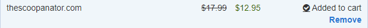

This site's purpose is to get the scoop or information about Preston, Soda Springs, Fish Haven, and more. We will be giving you the "scoop" on the weather, events, and anything beautiful or related to our community! Stay tuned for more updates!
This is a website where you can see the that Scoopanator.com is open for grabs.
The Scoop
Here is the proof that it was available.
